Images synthétiques générées par scripts/lutlib/testimages.py (pas des photographies). Looks : entrée et sortie Rec.709.
LUT officielle Apple absente : couche technique rendue avec la référence ACES 2.0 NON-APPLE. Voir 00_TECHNICAL/README.md.
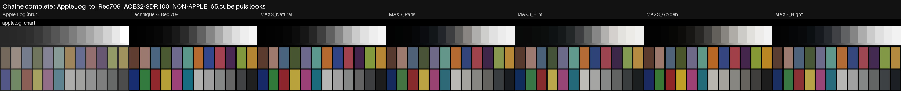

Rendu naturel, contraste modéré, peau naturelle, hautes lumières douces.
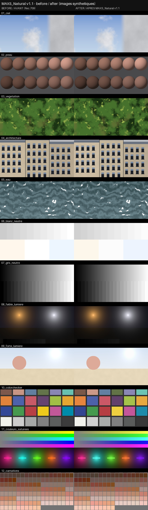
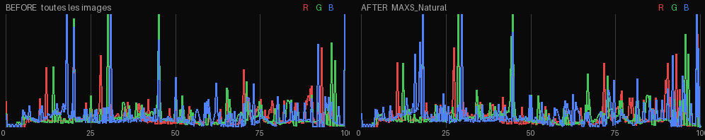
| fichier | rôle | SHA-256 | min | max |
|---|---|---|---|---|
MAXS_Natural_65.cube | MASTER | 32d37a643246897b… | 0.0 | 0.997891 |
MAXS_Natural_33.cube | compat | a79333a3168f1cec… | 0.0 | 0.99788 |
Couche CREATIVE Rec.709 BT.1886 → Rec.709 BT.1886, domaine 0–1, moteur : {"max_hue_shift_deg": 6.0, "hue_guard_chroma": [0.02, 0.04], "gamut_knee": 0.85}
{
"description": "Rendu naturel, contraste modéré, peau naturelle, hautes lumières douces.",
"tone": {
"contrast": 1.05,
"black_lift": 0.0,
"white_out": 0.99
},
"saturation": {
"global": 1.02,
"shadows": 0.95,
"highlights": 0.9
}
}| image | L_moyen_avant | L_moyen_apres | ratio_chroma_moyen | decalage_teinte_moyen_deg | pixels_clippes_avant_pct | pixels_clippes_apres_pct | pixels_noirs_avant_pct | pixels_noirs_apres_pct |
|---|---|---|---|---|---|---|---|---|
| 01_ciel | 0.7703 | 0.7817 | 0.9943 | 0.001 | 0.0 | 0.0 | 0.0 | 0.0 |
| 02_peau | 0.409 | 0.398 | 0.9817 | 0.003 | 0.0 | 0.0 | 0.0 | 0.0 |
| 03_vegetation | 0.4335 | 0.4244 | 0.9849 | 0.001 | 0.0 | 0.0 | 0.0 | 0.0 |
| 04_architecture | 0.6369 | 0.6425 | 0.9847 | 0.003 | 0.0 | 0.0 | 0.0 | 0.0 |
| 05_eau | 0.4883 | 0.4821 | 0.9965 | 0.005 | 1.588 | 0.0 | 0.0 | 0.0 |
| 06_blanc_neutre | 0.95 | 0.9479 | None | None | 54.583 | 0.0 | 0.0 | 0.0 |
| 07_gris_neutre | 0.5526 | 0.55 | None | None | 2.135 | 0.0 | 2.448 | 2.5 |
| 08_faible_lumiere | 0.251 | 0.2368 | 0.9604 | 0.008 | 0.096 | 0.0 | 0.579 | 0.579 |
| 09_forte_lumiere | 0.8958 | 0.9011 | 0.9588 | 0.003 | 7.5 | 0.0 | 0.0 | 0.0 |
| 10_colorchecker | 0.5403 | 0.5372 | 0.9946 | 0.046 | 0.0 | 0.0 | 0.0 | 0.0 |
| 11_couleurs_saturees | 0.5073 | 0.5027 | 0.9695 | 0.069 | 1.155 | 0.0 | 0.0 | 0.0 |
| 12_carnations | 0.5797 | 0.5797 | 0.9912 | 0.017 | 0.0 | 0.0 | 0.0 | 0.0 |
Paris contemporain : ombres légèrement froides, tons moyens légèrement chauds, verts désaturés, bleus contrôlés, blancs propres.
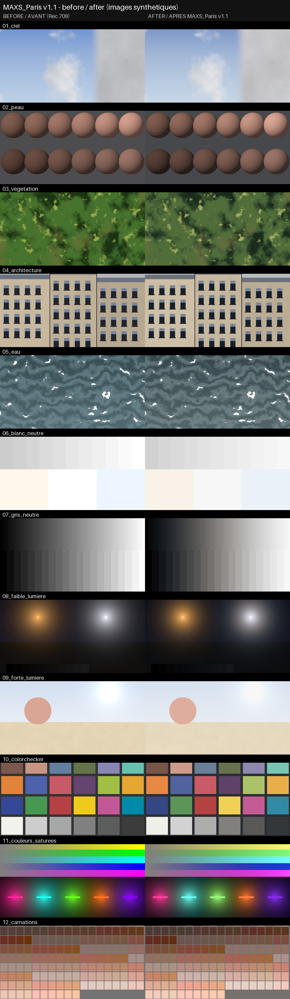
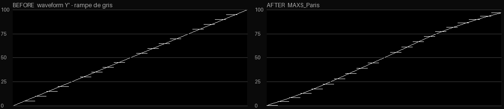
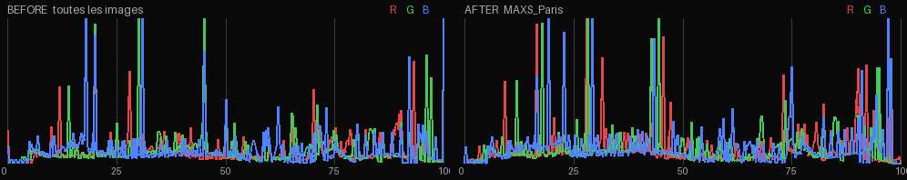
| fichier | rôle | SHA-256 | min | max |
|---|---|---|---|---|
MAXS_Paris_65.cube | MASTER | 7a7f2c29e470a189… | 0.002046 | 0.998361 |
MAXS_Paris_33.cube | compat | 897d9838990462db… | 0.00231 | 0.998349 |
Couche CREATIVE Rec.709 BT.1886 → Rec.709 BT.1886, domaine 0–1, moteur : {"max_hue_shift_deg": 6.0, "hue_guard_chroma": [0.02, 0.04], "gamut_knee": 0.85}
{
"description": "Paris contemporain : ombres légèrement froides, tons moyens légèrement chauds, verts désaturés, bleus contrôlés, blancs propres.",
"tone": {
"contrast": 1.08,
"black_lift": 0.012,
"white_out": 0.975
},
"saturation": {
"global": 0.96,
"shadows": 0.9,
"highlights": 0.85
},
"split_tone": {
"shadows": {
"hue": 250.0,
"strength": 0.01
},
"midtones": {
"hue": 70.0,
"strength": 0.006
},
"highlights": {
"hue": 0.0,
"strength": 0.0
}
},
"hue_bands": [
{
"name": "greens",
"center": 135.0,
"width": 45.0,
"chroma": 0.8
},
{
"name": "blues",
"center": 258.0,
"width": 40.0,
"chroma": 0.88
},
{
"name": "cyans",
"center": 205.0,
"width": 30.0,
"chroma": 0.9
}
]
}| image | L_moyen_avant | L_moyen_apres | ratio_chroma_moyen | decalage_teinte_moyen_deg | pixels_clippes_avant_pct | pixels_clippes_apres_pct | pixels_noirs_avant_pct | pixels_noirs_apres_pct |
|---|---|---|---|---|---|---|---|---|
| 01_ciel | 0.7703 | 0.7892 | 0.7778 | 0.375 | 0.0 | 0.0 | 0.0 | 0.0 |
| 02_peau | 0.409 | 0.3932 | 0.9347 | 1.14 | 0.0 | 0.0 | 0.0 | 0.0 |
| 03_vegetation | 0.4335 | 0.4204 | 0.7376 | 2.917 | 0.0 | 0.0 | 0.0 | 0.0 |
| 04_architecture | 0.6369 | 0.6478 | 0.9599 | 1.636 | 0.0 | 0.0 | 0.0 | 0.0 |
| 05_eau | 0.4883 | 0.4791 | 0.7701 | 5.382 | 1.588 | 0.0 | 0.0 | 0.0 |
| 06_blanc_neutre | 0.95 | 0.9405 | None | None | 54.583 | 0.0 | 0.0 | 0.0 |
| 07_gris_neutre | 0.5526 | 0.5498 | None | None | 2.135 | 0.0 | 2.448 | 0.0 |
| 08_faible_lumiere | 0.251 | 0.2334 | 0.8258 | 2.499 | 0.096 | 0.0 | 0.579 | 0.0 |
| 09_forte_lumiere | 0.8958 | 0.9008 | 0.8586 | 0.033 | 7.5 | 0.0 | 0.0 | 0.0 |
| 10_colorchecker | 0.5403 | 0.5366 | 0.8875 | 1.363 | 0.0 | 0.0 | 0.0 | 0.0 |
| 11_couleurs_saturees | 0.5073 | 0.5013 | 0.8483 | 2.602 | 1.155 | 0.0 | 0.0 | 0.0 |
| 12_carnations | 0.5797 | 0.5805 | 0.9601 | 0.626 | 0.0 | 0.0 | 0.0 | 0.0 |
Inspiration pellicule : contraste organique, noirs légèrement relevés, saturation contrôlée, légère séparation des couleurs.
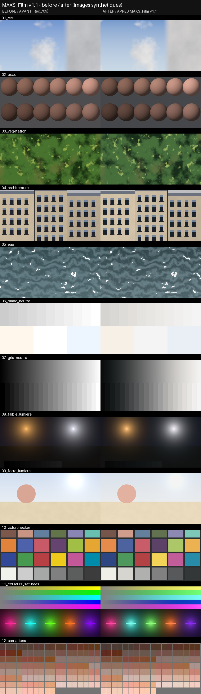
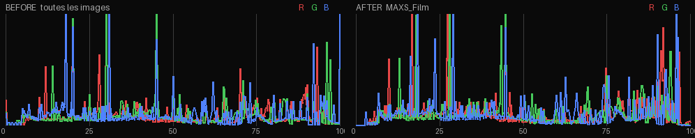
| fichier | rôle | SHA-256 | min | max |
|---|---|---|---|---|
MAXS_Film_65.cube | MASTER | bcd4e66162a9e24a… | 0.003821 | 0.999524 |
MAXS_Film_33.cube | compat | 60febb2afd302e92… | 0.003876 | 0.99952 |
Couche CREATIVE Rec.709 BT.1886 → Rec.709 BT.1886, domaine 0–1, moteur : {"max_hue_shift_deg": 6.0, "hue_guard_chroma": [0.02, 0.04], "gamut_knee": 0.85}
{
"description": "Inspiration pellicule : contraste organique, noirs légèrement relevés, saturation contrôlée, légère séparation des couleurs.",
"tone": {
"contrast": 1.12,
"black_lift": 0.06,
"white_out": 0.965
},
"saturation": {
"global": 0.95,
"shadows": 0.85,
"highlights": 0.8
},
"split_tone": {
"shadows": {
"hue": 215.0,
"strength": 0.006
},
"highlights": {
"hue": 80.0,
"strength": 0.006
}
},
"hue_bands": [
{
"name": "greens",
"center": 135.0,
"width": 40.0,
"chroma": 0.9,
"hue_shift": 3.0
},
{
"name": "blues",
"center": 262.0,
"width": 35.0,
"chroma": 0.92,
"hue_shift": -3.0
},
{
"name": "reds",
"center": 25.0,
"width": 25.0,
"chroma": 1.04
}
]
}| image | L_moyen_avant | L_moyen_apres | ratio_chroma_moyen | decalage_teinte_moyen_deg | pixels_clippes_avant_pct | pixels_clippes_apres_pct | pixels_noirs_avant_pct | pixels_noirs_apres_pct |
|---|---|---|---|---|---|---|---|---|
| 01_ciel | 0.7703 | 0.799 | 0.7725 | 3.575 | 0.0 | 0.0 | 0.0 | 0.0 |
| 02_peau | 0.409 | 0.3922 | 0.9166 | 0.118 | 0.0 | 0.0 | 0.0 | 0.0 |
| 03_vegetation | 0.4335 | 0.4196 | 0.8018 | 4.119 | 0.0 | 0.0 | 0.0 | 0.0 |
| 04_architecture | 0.6369 | 0.6574 | 0.984 | 2.36 | 0.0 | 0.0 | 0.0 | 0.0 |
| 05_eau | 0.4883 | 0.4782 | 0.9322 | 0.041 | 1.588 | 0.0 | 0.0 | 0.0 |
| 06_blanc_neutre | 0.95 | 0.9373 | None | None | 54.583 | 0.0 | 0.0 | 0.0 |
| 07_gris_neutre | 0.5526 | 0.5562 | None | None | 2.135 | 0.0 | 2.448 | 0.0 |
| 08_faible_lumiere | 0.251 | 0.244 | 0.8143 | 3.106 | 0.096 | 0.0 | 0.579 | 0.0 |
| 09_forte_lumiere | 0.8958 | 0.9039 | 0.8533 | 2.035 | 7.5 | 0.0 | 0.0 | 0.0 |
| 10_colorchecker | 0.5403 | 0.5397 | 0.9027 | 1.206 | 0.0 | 0.0 | 0.0 | 0.0 |
| 11_couleurs_saturees | 0.5073 | 0.5039 | 0.8568 | 1.75 | 1.155 | 0.0 | 0.0 | 0.0 |
| 12_carnations | 0.5797 | 0.5836 | 0.9417 | 0.426 | 0.0 | 0.0 | 0.0 | 0.0 |
Golden hour : chaleur subtile dans les tons moyens, oranges/jaunes saturés légèrement enrichis, peau naturelle, blancs préservés.
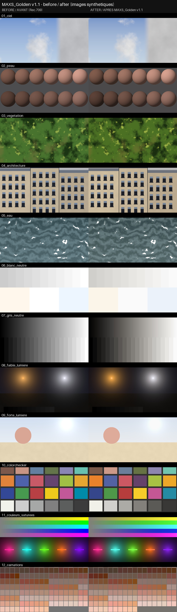
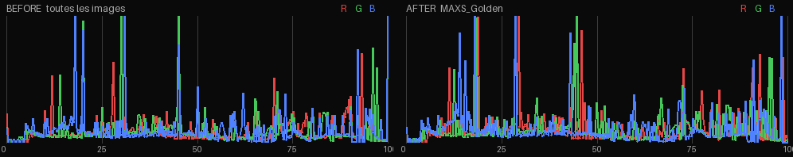
| fichier | rôle | SHA-256 | min | max |
|---|---|---|---|---|
MAXS_Golden_65.cube | MASTER | 75459397b0d8b254… | 0.00133 | 0.999884 |
MAXS_Golden_33.cube | compat | 64d25c6d28e488b6… | 0.00133 | 0.999884 |
Couche CREATIVE Rec.709 BT.1886 → Rec.709 BT.1886, domaine 0–1, moteur : {"max_hue_shift_deg": 6.0, "hue_guard_chroma": [0.02, 0.04], "gamut_knee": 0.85}
{
"description": "Golden hour : chaleur subtile dans les tons moyens, oranges/jaunes saturés légèrement enrichis, peau naturelle, blancs préservés.",
"tone": {
"contrast": 1.05,
"black_lift": 0.005,
"white_out": 0.985
},
"saturation": {
"global": 1.01,
"shadows": 0.95,
"highlights": 0.9
},
"split_tone": {
"shadows": {
"hue": 60.0,
"strength": 0.003
},
"midtones": {
"hue": 75.0,
"strength": 0.008
},
"highlights": {
"hue": 80.0,
"strength": 0.005
}
},
"hue_bands": [
{
"name": "oranges",
"center": 62.0,
"width": 32.0,
"chroma": 1.12,
"min_chroma": [
0.08,
0.13
]
},
{
"name": "yellows",
"center": 95.0,
"width": 28.0,
"chroma": 1.1,
"hue_shift": -2.0,
"min_chroma": [
0.06,
0.11
]
},
{
"name": "blues",
"center": 258.0,
"width": 40.0,
"chroma": 0.92
}
],
"skin_protect": {
"amount": 0.85
}
}| image | L_moyen_avant | L_moyen_apres | ratio_chroma_moyen | decalage_teinte_moyen_deg | pixels_clippes_avant_pct | pixels_clippes_apres_pct | pixels_noirs_avant_pct | pixels_noirs_apres_pct |
|---|---|---|---|---|---|---|---|---|
| 01_ciel | 0.7703 | 0.782 | 0.8059 | 0.636 | 0.0 | 0.0 | 0.0 | 0.0 |
| 02_peau | 0.409 | 0.3988 | 1.0004 | 0.772 | 0.0 | 0.0 | 0.0 | 0.0 |
| 03_vegetation | 0.4335 | 0.425 | 1.0066 | 3.28 | 0.0 | 0.0 | 0.0 | 0.0 |
| 04_architecture | 0.6369 | 0.6433 | 1.0557 | 1.163 | 0.0 | 0.0 | 0.0 | 0.0 |
| 05_eau | 0.4883 | 0.4824 | 0.8133 | 10.36 | 1.588 | 0.0 | 0.0 | 0.0 |
| 06_blanc_neutre | 0.95 | 0.9446 | None | None | 54.583 | 0.0 | 0.0 | 0.0 |
| 07_gris_neutre | 0.5526 | 0.5504 | None | None | 2.135 | 0.0 | 2.448 | 0.0 |
| 08_faible_lumiere | 0.251 | 0.2389 | 1.0422 | 0.734 | 0.096 | 0.048 | 0.579 | 0.0 |
| 09_forte_lumiere | 0.8958 | 0.8993 | 0.9582 | 0.779 | 7.5 | 0.0 | 0.0 | 0.0 |
| 10_colorchecker | 0.5403 | 0.5377 | 0.9864 | 2.269 | 0.0 | 0.0 | 0.0 | 0.0 |
| 11_couleurs_saturees | 0.5073 | 0.5033 | 0.9572 | 2.728 | 1.155 | 0.0 | 0.0 | 0.0 |
| 12_carnations | 0.5797 | 0.5801 | 1.0167 | 1.107 | 0.0 | 0.0 | 0.0 | 0.0 |
Nuit : ombres légèrement froides, hautes lumières neutres, contraste contrôlé, détails des basses lumières conservés.
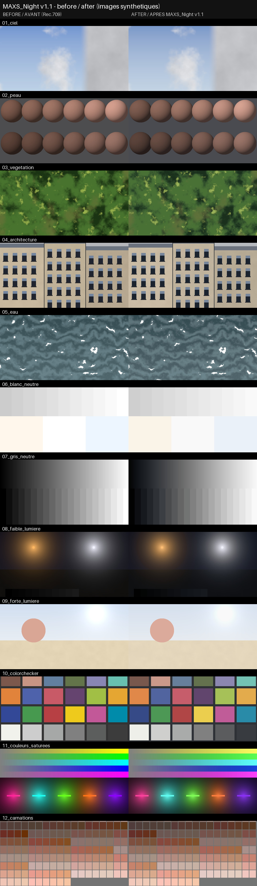
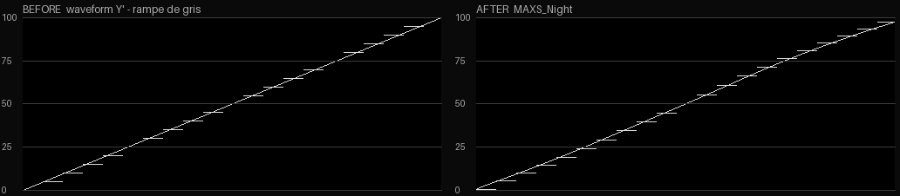
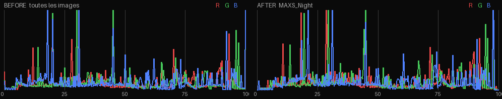
| fichier | rôle | SHA-256 | min | max |
|---|---|---|---|---|
MAXS_Night_65.cube | MASTER | cf4cf930c9b44971… | 0.003818 | 0.994961 |
MAXS_Night_33.cube | compat | 4157064956b6dcdf… | 0.004624 | 0.99491 |
Couche CREATIVE Rec.709 BT.1886 → Rec.709 BT.1886, domaine 0–1, moteur : {"max_hue_shift_deg": 6.0, "hue_guard_chroma": [0.02, 0.04], "gamut_knee": 0.85}
{
"description": "Nuit : ombres légèrement froides, hautes lumières neutres, contraste contrôlé, détails des basses lumières conservés.",
"tone": {
"contrast": 1.04,
"black_lift": 0.02,
"white_out": 0.98,
"shadow_x": 0.22
},
"saturation": {
"global": 0.94,
"shadows": 0.8,
"highlights": 0.9
},
"split_tone": {
"shadows": {
"hue": 255.0,
"strength": 0.011
}
},
"hue_bands": [
{
"name": "blues",
"center": 262.0,
"width": 40.0,
"chroma": 0.88
}
]
}| image | L_moyen_avant | L_moyen_apres | ratio_chroma_moyen | decalage_teinte_moyen_deg | pixels_clippes_avant_pct | pixels_clippes_apres_pct | pixels_noirs_avant_pct | pixels_noirs_apres_pct |
|---|---|---|---|---|---|---|---|---|
| 01_ciel | 0.7703 | 0.7801 | 0.8116 | 0.018 | 0.0 | 0.0 | 0.0 | 0.0 |
| 02_peau | 0.409 | 0.4036 | 0.9177 | 1.307 | 0.0 | 0.0 | 0.0 | 0.0 |
| 03_vegetation | 0.4335 | 0.429 | 0.8716 | 2.023 | 0.0 | 0.0 | 0.0 | 0.0 |
| 04_architecture | 0.6369 | 0.6441 | 0.9348 | 0.571 | 0.0 | 0.0 | 0.0 | 0.0 |
| 05_eau | 0.4883 | 0.4849 | 0.9432 | 2.052 | 1.588 | 0.0 | 0.0 | 0.0 |
| 06_blanc_neutre | 0.95 | 0.9403 | None | None | 54.583 | 0.0 | 0.0 | 0.0 |
| 07_gris_neutre | 0.5526 | 0.5531 | None | None | 2.135 | 0.0 | 2.448 | 0.0 |
| 08_faible_lumiere | 0.251 | 0.2485 | 0.777 | 4.179 | 0.096 | 0.0 | 0.579 | 0.0 |
| 09_forte_lumiere | 0.8958 | 0.8958 | 0.8682 | 0.027 | 7.5 | 0.0 | 0.0 | 0.0 |
| 10_colorchecker | 0.5403 | 0.54 | 0.9041 | 0.227 | 0.0 | 0.0 | 0.0 | 0.0 |
| 11_couleurs_saturees | 0.5073 | 0.5062 | 0.884 | 1.693 | 1.155 | 0.0 | 0.0 | 0.0 |
| 12_carnations | 0.5797 | 0.5811 | 0.9353 | 0.323 | 0.0 | 0.0 | 0.0 | 0.0 |
00_TECHNICAL/ACES2_NON-APPLE/AppleLog_to_Rec709_ACES2-SDR100_NON-APPLE_33.cube| test | statut | valeur |
|---|---|---|
| format .cube | PASS | LUT_3D_SIZE 33 |
| compatibilité lecteurs : sans BOM, fins de ligne LF | PASS | |
| en-têtes ASCII | PASS | |
| mots-clés standard uniquement (TITLE, LUT_3D_SIZE, DOMAIN_MIN/MAX) | PASS | DOMAIN_MAX DOMAIN_MIN LUT_3D_SIZE TITLE |
| taille MASTER 65 ou compat 33 (info) | PASS | 33 |
| dimensions >= 33 | PASS | 33^3 |
| nombre de points | PASS | 35937 |
| absence de NaN | PASS | 0 NaN |
| absence de Inf | PASS | 0 Inf |
| valeurs min/max dans [0,1] | PASS | min=0.000000 max=1.000000 |
| domaine d'entrée | PASS | [0.0, 0.0, 0.0]..[1.0, 1.0, 1.0] |
| axe des gris : luminance non décroissante (entrée log) | PASS | min dY=0.000e+00 |
| axe des gris : écart RGB (info) | PASS | 0.0000 |
| continuité (info, entrée log) | PASS | gain local OkLab max 4.931 |
| gris Apple Log -> neutres | PASS | C max=0.0000 |
| monotonie (-8 à +6 IL) | PASS | min dY=9.30e-08 |
| gris 18 % (info) | PASS | V=0.383 |
00_TECHNICAL/ACES2_NON-APPLE/AppleLog_to_Rec709_ACES2-SDR100_NON-APPLE_65.cube| test | statut | valeur |
|---|---|---|
| format .cube | PASS | LUT_3D_SIZE 65 |
| compatibilité lecteurs : sans BOM, fins de ligne LF | PASS | |
| en-têtes ASCII | PASS | |
| mots-clés standard uniquement (TITLE, LUT_3D_SIZE, DOMAIN_MIN/MAX) | PASS | DOMAIN_MAX DOMAIN_MIN LUT_3D_SIZE TITLE |
| taille MASTER 65 ou compat 33 (info) | PASS | 65 |
| dimensions >= 33 | PASS | 65^3 |
| nombre de points | PASS | 274625 |
| absence de NaN | PASS | 0 NaN |
| absence de Inf | PASS | 0 Inf |
| valeurs min/max dans [0,1] | PASS | min=0.000000 max=1.000000 |
| domaine d'entrée | PASS | [0.0, 0.0, 0.0]..[1.0, 1.0, 1.0] |
| axe des gris : luminance non décroissante (entrée log) | PASS | min dY=0.000e+00 |
| axe des gris : écart RGB (info) | PASS | 0.0000 |
| continuité (info, entrée log) | PASS | gain local OkLab max 3.174 |
| gris Apple Log -> neutres | PASS | C max=0.0000 |
| monotonie (-8 à +6 IL) | PASS | min dY=1.70e-07 |
| gris 18 % (info) | PASS | V=0.383 |
01_LOOKS/MAXS_Film/MAXS_Film_33.cube| test | statut | valeur |
|---|---|---|
| format .cube | PASS | LUT_3D_SIZE 33 |
| compatibilité lecteurs : sans BOM, fins de ligne LF | PASS | |
| en-têtes ASCII | PASS | |
| mots-clés standard uniquement (TITLE, LUT_3D_SIZE, DOMAIN_MIN/MAX) | PASS | DOMAIN_MAX DOMAIN_MIN LUT_3D_SIZE TITLE |
| taille MASTER 65 ou compat 33 (info) | PASS | 33 |
| dimensions >= 33 | PASS | 33^3 |
| nombre de points | PASS | 35937 |
| absence de NaN | PASS | 0 NaN |
| absence de Inf | PASS | 0 Inf |
| valeurs min/max dans [0,1] | PASS | min=0.003876 max=0.999520 |
| domaine d'entrée | PASS | [0.0, 0.0, 0.0]..[1.0, 1.0, 1.0] |
| axe des gris : luminance croissante | PASS | min dY=6.135e-04 |
| axe des gris : écart RGB (info) | PASS | 0.0239 |
| continuité (gain local OkLab max entre noeuds) | PASS | 1.544 (seuil 4) |
| gris : chroma max | PASS | 0.0060 (≤ 0.02) |
| blanc pur neutre | PASS | C=0.0000 |
| noir pur neutre | PASS | C=0.0000 |
| noir pas trop relevé | PASS | L=0.0600 |
| blanc pas terne | PASS | V=[0.9564, 0.9564, 0.9564] |
| monotonie luminance (gris) | PASS | min dY=1.23e-05 |
| monotonie approx. luminance (couleurs) | PASS | min dY=0.00e+00 |
| hautes lumières non clippées (gradient 0.85→1) | PASS | min dY=5.16e-04 |
| clipping anormal (noeuds intérieurs à 0 ou 1) | PASS | 0.00 % |
| détail des basses lumières (0.02 vs 0.06) | PASS | ratio=0.655 |
| peau mesurée (ColorChecker) : décalage de teinte | PASS | max 0.68° |
| peau mesurée (ColorChecker) : ratio de chroma | PASS | 0.876..0.984 min à L=0.38 C=0.054 h=42° |
| peau mesurée (ColorChecker) : variation de luminosité | PASS | max dL=0.034 |
| carnations (enveloppe dérivée) : décalage de teinte | PASS | max 3.94° |
| carnations (enveloppe dérivée) : ratio de chroma | FAIL | 0.785..1.005 min à L=0.35 C=0.035 h=55° |
| carnations (enveloppe dérivée) : variation de luminosité | PASS | max dL=0.033 |
| peau : continuité autour de la zone protégée | PASS | gain local max = 1.22 (seuil 4.0) |
| teinte : rotation max (fichier, C ≥ 0.065) | PASS | max 6.57° (≤ 7°), moyen 1.44° 63074 couleurs |
| teinte : écart perceptuel ΔH (0.02 ≤ C < seuil) | PASS | max ΔH=0.0083 (≤ 0.015), angle max 22.7° angle peu significatif à faible chroma |
| gamut : continuité rampes primaires/néons | PASS | gain local max = 1.29 (seuil 4.0) |
| gamut : retournement de chroma en fin de rampe | PASS | 3.9 % (≤ 8 %) roll-off des hautes lumières sur les primaires lumineuses |
| gamut : pas de plateau en fin de rampe (compression douce) | PASS | pas final / médian = 0.45 |
| gamut : teinte des primaires/néons | PASS | max 6.18° (≤ 7°) |
| saturation : ratio moyen ColorChecker | PASS | 0.902 |
| images : augmentation de pixels clippés | PASS | 0.000 % (-) |
01_LOOKS/MAXS_Film/MAXS_Film_65.cube| test | statut | valeur |
|---|---|---|
| format .cube | PASS | LUT_3D_SIZE 65 |
| compatibilité lecteurs : sans BOM, fins de ligne LF | PASS | |
| en-têtes ASCII | PASS | |
| mots-clés standard uniquement (TITLE, LUT_3D_SIZE, DOMAIN_MIN/MAX) | PASS | DOMAIN_MAX DOMAIN_MIN LUT_3D_SIZE TITLE |
| taille MASTER 65 ou compat 33 (info) | PASS | 65 |
| dimensions >= 33 | PASS | 65^3 |
| nombre de points | PASS | 274625 |
| absence de NaN | PASS | 0 NaN |
| absence de Inf | PASS | 0 Inf |
| valeurs min/max dans [0,1] | PASS | min=0.003821 max=0.999524 |
| domaine d'entrée | PASS | [0.0, 0.0, 0.0]..[1.0, 1.0, 1.0] |
| axe des gris : luminance croissante | PASS | min dY=2.744e-04 |
| axe des gris : écart RGB (info) | PASS | 0.0240 |
| continuité (gain local OkLab max entre noeuds) | PASS | 1.123 (seuil 4) |
| gris : chroma max | PASS | 0.0060 (≤ 0.02) |
| blanc pur neutre | PASS | C=0.0000 |
| noir pur neutre | PASS | C=0.0000 |
| noir pas trop relevé | PASS | L=0.0600 |
| blanc pas terne | PASS | V=[0.9564, 0.9564, 0.9564] |
| monotonie luminance (gris) | PASS | min dY=1.34e-05 |
| monotonie approx. luminance (couleurs) | PASS | min dY=0.00e+00 |
| hautes lumières non clippées (gradient 0.85→1) | PASS | min dY=5.03e-04 |
| clipping anormal (noeuds intérieurs à 0 ou 1) | PASS | 0.00 % |
| détail des basses lumières (0.02 vs 0.06) | PASS | ratio=0.636 |
| peau mesurée (ColorChecker) : décalage de teinte | PASS | max 0.65° |
| peau mesurée (ColorChecker) : ratio de chroma | PASS | 0.883..0.984 min à L=0.38 C=0.054 h=42° |
| peau mesurée (ColorChecker) : variation de luminosité | PASS | max dL=0.034 |
| carnations (enveloppe dérivée) : décalage de teinte | PASS | max 3.54° |
| carnations (enveloppe dérivée) : ratio de chroma | FAIL | 0.788..1.004 min à L=0.35 C=0.035 h=55° |
| carnations (enveloppe dérivée) : variation de luminosité | PASS | max dL=0.033 |
| peau : continuité autour de la zone protégée | PASS | gain local max = 1.22 (seuil 4.0) |
| teinte : rotation max (fichier, C ≥ 0.065) | PASS | max 6.27° (≤ 6.5°), moyen 1.44° 63074 couleurs |
| teinte : écart perceptuel ΔH (0.02 ≤ C < seuil) | PASS | max ΔH=0.0081 (≤ 0.015), angle max 22.1° angle peu significatif à faible chroma |
| gamut : continuité rampes primaires/néons | PASS | gain local max = 1.38 (seuil 4.0) |
| gamut : retournement de chroma en fin de rampe | PASS | 3.9 % (≤ 8 %) roll-off des hautes lumières sur les primaires lumineuses |
| gamut : pas de plateau en fin de rampe (compression douce) | PASS | pas final / médian = 0.45 |
| gamut : teinte des primaires/néons | PASS | max 6.03° (≤ 6.5°) |
| saturation : ratio moyen ColorChecker | PASS | 0.903 |
| images : augmentation de pixels clippés | PASS | 0.000 % (-) |
01_LOOKS/MAXS_Golden/MAXS_Golden_33.cube| test | statut | valeur |
|---|---|---|
| format .cube | PASS | LUT_3D_SIZE 33 |
| compatibilité lecteurs : sans BOM, fins de ligne LF | PASS | |
| en-têtes ASCII | PASS | |
| mots-clés standard uniquement (TITLE, LUT_3D_SIZE, DOMAIN_MIN/MAX) | PASS | DOMAIN_MAX DOMAIN_MIN LUT_3D_SIZE TITLE |
| taille MASTER 65 ou compat 33 (info) | PASS | 33 |
| dimensions >= 33 | PASS | 33^3 |
| nombre de points | PASS | 35937 |
| absence de NaN | PASS | 0 NaN |
| absence de Inf | PASS | 0 Inf |
| valeurs min/max dans [0,1] | PASS | min=0.001330 max=0.999884 |
| domaine d'entrée | PASS | [0.0, 0.0, 0.0]..[1.0, 1.0, 1.0] |
| axe des gris : luminance croissante | PASS | min dY=1.986e-04 |
| axe des gris : écart RGB (info) | PASS | 0.0315 |
| continuité (gain local OkLab max entre noeuds) | PASS | 2.220 (seuil 4) |
| gris : chroma max | PASS | 0.0083 (≤ 0.02) |
| blanc pur neutre | PASS | C=0.0000 |
| noir pur neutre | PASS | C=0.0000 |
| noir pas trop relevé | PASS | L=0.0050 |
| blanc pas terne | PASS | V=[0.9813, 0.9813, 0.9813] |
| monotonie luminance (gris) | PASS | min dY=2.86e-07 |
| monotonie approx. luminance (couleurs) | PASS | min dY=0.00e+00 |
| hautes lumières non clippées (gradient 0.85→1) | PASS | min dY=8.45e-04 |
| clipping anormal (noeuds intérieurs à 0 ou 1) | PASS | 0.00 % |
| détail des basses lumières (0.02 vs 0.06) | PASS | ratio=0.861 |
| peau mesurée (ColorChecker) : décalage de teinte | PASS | max 1.28° |
| peau mesurée (ColorChecker) : ratio de chroma | PASS | 0.989..1.036 min à L=0.38 C=0.054 h=42° |
| peau mesurée (ColorChecker) : variation de luminosité | PASS | max dL=0.014 |
| carnations (enveloppe dérivée) : décalage de teinte | FAIL | max 4.09° |
| carnations (enveloppe dérivée) : ratio de chroma | PASS | 0.926..1.145 min à L=0.35 C=0.100 h=45° |
| carnations (enveloppe dérivée) : variation de luminosité | PASS | max dL=0.014 |
| peau : continuité autour de la zone protégée | PASS | gain local max = 1.30 (seuil 4.0) |
| teinte : rotation max (fichier, C ≥ 0.065) | PASS | max 6.10° (≤ 7°), moyen 2.37° 63074 couleurs |
| teinte : écart perceptuel ΔH (0.02 ≤ C < seuil) | PASS | max ΔH=0.0083 (≤ 0.015), angle max 24.3° angle peu significatif à faible chroma |
| gamut : continuité rampes primaires/néons | PASS | gain local max = 1.33 (seuil 4.0) |
| gamut : retournement de chroma en fin de rampe | PASS | 4.2 % (≤ 8 %) roll-off des hautes lumières sur les primaires lumineuses |
| gamut : pas de plateau en fin de rampe (compression douce) | PASS | pas final / médian = 0.63 |
| gamut : teinte des primaires/néons | PASS | max 6.07° (≤ 7°) |
| saturation : ratio moyen ColorChecker | PASS | 0.979 |
| images : augmentation de pixels clippés | PASS | 0.000 % (-) |
01_LOOKS/MAXS_Golden/MAXS_Golden_65.cube| test | statut | valeur |
|---|---|---|
| format .cube | PASS | LUT_3D_SIZE 65 |
| compatibilité lecteurs : sans BOM, fins de ligne LF | PASS | |
| en-têtes ASCII | PASS | |
| mots-clés standard uniquement (TITLE, LUT_3D_SIZE, DOMAIN_MIN/MAX) | PASS | DOMAIN_MAX DOMAIN_MIN LUT_3D_SIZE TITLE |
| taille MASTER 65 ou compat 33 (info) | PASS | 65 |
| dimensions >= 33 | PASS | 65^3 |
| nombre de points | PASS | 274625 |
| absence de NaN | PASS | 0 NaN |
| absence de Inf | PASS | 0 Inf |
| valeurs min/max dans [0,1] | PASS | min=0.001330 max=0.999884 |
| domaine d'entrée | PASS | [0.0, 0.0, 0.0]..[1.0, 1.0, 1.0] |
| axe des gris : luminance croissante | PASS | min dY=4.434e-05 |
| axe des gris : écart RGB (info) | PASS | 0.0315 |
| continuité (gain local OkLab max entre noeuds) | PASS | 1.771 (seuil 4) |
| gris : chroma max | PASS | 0.0083 (≤ 0.02) |
| blanc pur neutre | PASS | C=0.0000 |
| noir pur neutre | PASS | C=0.0000 |
| noir pas trop relevé | PASS | L=0.0050 |
| blanc pas terne | PASS | V=[0.9813, 0.9813, 0.9813] |
| monotonie luminance (gris) | PASS | min dY=2.97e-07 |
| monotonie approx. luminance (couleurs) | PASS | min dY=0.00e+00 |
| hautes lumières non clippées (gradient 0.85→1) | PASS | min dY=8.50e-04 |
| clipping anormal (noeuds intérieurs à 0 ou 1) | PASS | 0.00 % |
| détail des basses lumières (0.02 vs 0.06) | PASS | ratio=0.853 |
| peau mesurée (ColorChecker) : décalage de teinte | PASS | max 0.90° |
| peau mesurée (ColorChecker) : ratio de chroma | PASS | 0.982..1.025 min à L=0.38 C=0.054 h=42° |
| peau mesurée (ColorChecker) : variation de luminosité | PASS | max dL=0.014 |
| carnations (enveloppe dérivée) : décalage de teinte | PASS | max 3.76° |
| carnations (enveloppe dérivée) : ratio de chroma | PASS | 0.926..1.140 min à L=0.35 C=0.100 h=45° |
| carnations (enveloppe dérivée) : variation de luminosité | PASS | max dL=0.014 |
| peau : continuité autour de la zone protégée | PASS | gain local max = 1.31 (seuil 4.0) |
| teinte : rotation max (fichier, C ≥ 0.065) | PASS | max 6.02° (≤ 6.5°), moyen 2.37° 63074 couleurs |
| teinte : écart perceptuel ΔH (0.02 ≤ C < seuil) | PASS | max ΔH=0.0083 (≤ 0.015), angle max 24.4° angle peu significatif à faible chroma |
| gamut : continuité rampes primaires/néons | PASS | gain local max = 1.64 (seuil 4.0) |
| gamut : retournement de chroma en fin de rampe | PASS | 4.2 % (≤ 8 %) roll-off des hautes lumières sur les primaires lumineuses |
| gamut : pas de plateau en fin de rampe (compression douce) | PASS | pas final / médian = 0.63 |
| gamut : teinte des primaires/néons | PASS | max 6.01° (≤ 6.5°) |
| saturation : ratio moyen ColorChecker | PASS | 0.979 |
| images : augmentation de pixels clippés | PASS | 0.000 % (-) |
01_LOOKS/MAXS_Natural/MAXS_Natural_33.cube| test | statut | valeur |
|---|---|---|
| format .cube | PASS | LUT_3D_SIZE 33 |
| compatibilité lecteurs : sans BOM, fins de ligne LF | PASS | |
| en-têtes ASCII | PASS | |
| mots-clés standard uniquement (TITLE, LUT_3D_SIZE, DOMAIN_MIN/MAX) | PASS | DOMAIN_MAX DOMAIN_MIN LUT_3D_SIZE TITLE |
| taille MASTER 65 ou compat 33 (info) | PASS | 33 |
| dimensions >= 33 | PASS | 33^3 |
| nombre de points | PASS | 35937 |
| absence de NaN | PASS | 0 NaN |
| absence de Inf | PASS | 0 Inf |
| valeurs min/max dans [0,1] | PASS | min=0.000000 max=0.997880 |
| domaine d'entrée | PASS | [0.0, 0.0, 0.0]..[1.0, 1.0, 1.0] |
| axe des gris : luminance croissante | PASS | min dY=1.614e-04 |
| axe des gris : écart RGB (info) | PASS | 0.0000 |
| continuité (gain local OkLab max entre noeuds) | PASS | 1.076 (seuil 4) |
| gris : chroma max | PASS | 0.0000 (≤ 0.02) |
| blanc pur neutre | PASS | C=0.0000 |
| noir pur neutre | PASS | C=0.0000 |
| noir pas trop relevé | PASS | L=0.0000 |
| blanc pas terne | PASS | V=[0.9875, 0.9875, 0.9875] |
| monotonie luminance (gris) | PASS | min dY=3.94e-08 |
| monotonie approx. luminance (couleurs) | PASS | min dY=0.00e+00 |
| hautes lumières non clippées (gradient 0.85→1) | PASS | min dY=8.71e-04 |
| clipping anormal (noeuds intérieurs à 0 ou 1) | PASS | 0.00 % |
| détail des basses lumières (0.02 vs 0.06) | PASS | ratio=0.861 |
| peau mesurée (ColorChecker) : décalage de teinte | PASS | max 0.03° |
| peau mesurée (ColorChecker) : ratio de chroma | PASS | 0.967..1.010 min à L=0.38 C=0.054 h=42° |
| peau mesurée (ColorChecker) : variation de luminosité | PASS | max dL=0.013 |
| carnations (enveloppe dérivée) : décalage de teinte | PASS | max 0.92° |
| carnations (enveloppe dérivée) : ratio de chroma | PASS | 0.921..1.012 min à L=0.35 C=0.100 h=45° |
| carnations (enveloppe dérivée) : variation de luminosité | PASS | max dL=0.015 |
| peau : continuité autour de la zone protégée | PASS | gain local max = 1.08 (seuil 4.0) |
| teinte : rotation max (fichier, C ≥ 0.065) | PASS | max 1.46° (≤ 7°), moyen 0.03° 63074 couleurs |
| teinte : écart perceptuel ΔH (0.02 ≤ C < seuil) | PASS | max ΔH=0.0013 (≤ 0.015), angle max 2.5° angle peu significatif à faible chroma |
| gamut : continuité rampes primaires/néons | PASS | gain local max = 1.08 (seuil 4.0) |
| gamut : retournement de chroma en fin de rampe | PASS | 3.9 % (≤ 8 %) roll-off des hautes lumières sur les primaires lumineuses |
| gamut : pas de plateau en fin de rampe (compression douce) | PASS | pas final / médian = 0.59 |
| gamut : teinte des primaires/néons | PASS | max 1.56° (≤ 7°) |
| saturation : ratio moyen ColorChecker | PASS | 0.996 |
| images : augmentation de pixels clippés | PASS | 0.000 % (-) |
01_LOOKS/MAXS_Natural/MAXS_Natural_65.cube| test | statut | valeur |
|---|---|---|
| format .cube | PASS | LUT_3D_SIZE 65 |
| compatibilité lecteurs : sans BOM, fins de ligne LF | PASS | |
| en-têtes ASCII | PASS | |
| mots-clés standard uniquement (TITLE, LUT_3D_SIZE, DOMAIN_MIN/MAX) | PASS | DOMAIN_MAX DOMAIN_MIN LUT_3D_SIZE TITLE |
| taille MASTER 65 ou compat 33 (info) | PASS | 65 |
| dimensions >= 33 | PASS | 65^3 |
| nombre de points | PASS | 274625 |
| absence de NaN | PASS | 0 NaN |
| absence de Inf | PASS | 0 Inf |
| valeurs min/max dans [0,1] | PASS | min=0.000000 max=0.997891 |
| domaine d'entrée | PASS | [0.0, 0.0, 0.0]..[1.0, 1.0, 1.0] |
| axe des gris : luminance croissante | PASS | min dY=2.995e-05 |
| axe des gris : écart RGB (info) | PASS | 0.0000 |
| continuité (gain local OkLab max entre noeuds) | PASS | 0.896 (seuil 4) |
| gris : chroma max | PASS | 0.0000 (≤ 0.02) |
| blanc pur neutre | PASS | C=0.0000 |
| noir pur neutre | PASS | C=0.0000 |
| noir pas trop relevé | PASS | L=0.0000 |
| blanc pas terne | PASS | V=[0.9875, 0.9875, 0.9875] |
| monotonie luminance (gris) | PASS | min dY=3.86e-08 |
| monotonie approx. luminance (couleurs) | PASS | min dY=0.00e+00 |
| hautes lumières non clippées (gradient 0.85→1) | PASS | min dY=8.77e-04 |
| clipping anormal (noeuds intérieurs à 0 ou 1) | PASS | 0.00 % |
| détail des basses lumières (0.02 vs 0.06) | PASS | ratio=0.863 |
| peau mesurée (ColorChecker) : décalage de teinte | PASS | max 0.00° |
| peau mesurée (ColorChecker) : ratio de chroma | PASS | 0.967..1.010 min à L=0.38 C=0.054 h=42° |
| peau mesurée (ColorChecker) : variation de luminosité | PASS | max dL=0.013 |
| carnations (enveloppe dérivée) : décalage de teinte | PASS | max 0.87° |
| carnations (enveloppe dérivée) : ratio de chroma | PASS | 0.920..1.012 min à L=0.35 C=0.100 h=45° |
| carnations (enveloppe dérivée) : variation de luminosité | PASS | max dL=0.015 |
| peau : continuité autour de la zone protégée | PASS | gain local max = 1.08 (seuil 4.0) |
| teinte : rotation max (fichier, C ≥ 0.065) | PASS | max 1.40° (≤ 6.5°), moyen 0.03° 63074 couleurs |
| teinte : écart perceptuel ΔH (0.02 ≤ C < seuil) | PASS | max ΔH=0.0008 (≤ 0.015), angle max 1.2° angle peu significatif à faible chroma |
| gamut : continuité rampes primaires/néons | PASS | gain local max = 1.63 (seuil 4.0) |
| gamut : retournement de chroma en fin de rampe | PASS | 4.8 % (≤ 8 %) roll-off des hautes lumières sur les primaires lumineuses |
| gamut : pas de plateau en fin de rampe (compression douce) | PASS | pas final / médian = 0.59 |
| gamut : teinte des primaires/néons | PASS | max 1.56° (≤ 6.5°) |
| saturation : ratio moyen ColorChecker | PASS | 0.996 |
| images : augmentation de pixels clippés | PASS | 0.000 % (-) |
01_LOOKS/MAXS_Night/MAXS_Night_33.cube| test | statut | valeur |
|---|---|---|
| format .cube | PASS | LUT_3D_SIZE 33 |
| compatibilité lecteurs : sans BOM, fins de ligne LF | PASS | |
| en-têtes ASCII | PASS | |
| mots-clés standard uniquement (TITLE, LUT_3D_SIZE, DOMAIN_MIN/MAX) | PASS | DOMAIN_MAX DOMAIN_MIN LUT_3D_SIZE TITLE |
| taille MASTER 65 ou compat 33 (info) | PASS | 33 |
| dimensions >= 33 | PASS | 33^3 |
| nombre de points | PASS | 35937 |
| absence de NaN | PASS | 0 NaN |
| absence de Inf | PASS | 0 Inf |
| valeurs min/max dans [0,1] | PASS | min=0.004624 max=0.994910 |
| domaine d'entrée | PASS | [0.0, 0.0, 0.0]..[1.0, 1.0, 1.0] |
| axe des gris : luminance croissante | PASS | min dY=3.742e-04 |
| axe des gris : écart RGB (info) | PASS | 0.0312 |
| continuité (gain local OkLab max entre noeuds) | PASS | 1.149 (seuil 4) |
| gris : chroma max | PASS | 0.0110 (≤ 0.02) |
| blanc pur neutre | PASS | C=0.0000 |
| noir pur neutre | PASS | C=0.0000 |
| noir pas trop relevé | PASS | L=0.0200 |
| blanc pas terne | PASS | V=[0.9751, 0.9751, 0.9751] |
| monotonie luminance (gris) | PASS | min dY=2.60e-06 |
| monotonie approx. luminance (couleurs) | PASS | min dY=0.00e+00 |
| hautes lumières non clippées (gradient 0.85→1) | PASS | min dY=8.26e-04 |
| clipping anormal (noeuds intérieurs à 0 ou 1) | PASS | 0.00 % |
| détail des basses lumières (0.02 vs 0.06) | PASS | ratio=0.941 |
| peau mesurée (ColorChecker) : décalage de teinte | PASS | max 0.99° |
| peau mesurée (ColorChecker) : ratio de chroma | PASS | 0.888..0.969 min à L=0.38 C=0.054 h=42° |
| peau mesurée (ColorChecker) : variation de luminosité | PASS | max dL=0.012 |
| carnations (enveloppe dérivée) : décalage de teinte | FAIL | max 5.16° |
| carnations (enveloppe dérivée) : ratio de chroma | FAIL | 0.756..0.968 min à L=0.35 C=0.035 h=55° |
| carnations (enveloppe dérivée) : variation de luminosité | PASS | max dL=0.012 |
| peau : continuité autour de la zone protégée | PASS | gain local max = 1.08 (seuil 4.0) |
| teinte : rotation max (fichier, C ≥ 0.065) | PASS | max 6.37° (≤ 7°), moyen 0.57° 63074 couleurs |
| teinte : écart perceptuel ΔH (0.02 ≤ C < seuil) | PASS | max ΔH=0.0124 (≤ 0.015), angle max 44.2° angle peu significatif à faible chroma |
| gamut : continuité rampes primaires/néons | PASS | gain local max = 1.19 (seuil 4.0) |
| gamut : retournement de chroma en fin de rampe | PASS | 0.0 % (≤ 8 %) roll-off des hautes lumières sur les primaires lumineuses |
| gamut : pas de plateau en fin de rampe (compression douce) | PASS | pas final / médian = 0.67 |
| gamut : teinte des primaires/néons | PASS | max 6.17° (≤ 7°) |
| saturation : ratio moyen ColorChecker | PASS | 0.904 |
| images : augmentation de pixels clippés | PASS | 0.000 % (-) |
01_LOOKS/MAXS_Night/MAXS_Night_65.cube| test | statut | valeur |
|---|---|---|
| format .cube | PASS | LUT_3D_SIZE 65 |
| compatibilité lecteurs : sans BOM, fins de ligne LF | PASS | |
| en-têtes ASCII | PASS | |
| mots-clés standard uniquement (TITLE, LUT_3D_SIZE, DOMAIN_MIN/MAX) | PASS | DOMAIN_MAX DOMAIN_MIN LUT_3D_SIZE TITLE |
| taille MASTER 65 ou compat 33 (info) | PASS | 65 |
| dimensions >= 33 | PASS | 65^3 |
| nombre de points | PASS | 274625 |
| absence de NaN | PASS | 0 NaN |
| absence de Inf | PASS | 0 Inf |
| valeurs min/max dans [0,1] | PASS | min=0.003818 max=0.994961 |
| domaine d'entrée | PASS | [0.0, 0.0, 0.0]..[1.0, 1.0, 1.0] |
| axe des gris : luminance croissante | PASS | min dY=1.167e-04 |
| axe des gris : écart RGB (info) | PASS | 0.0312 |
| continuité (gain local OkLab max entre noeuds) | PASS | 1.098 (seuil 4) |
| gris : chroma max | PASS | 0.0110 (≤ 0.02) |
| blanc pur neutre | PASS | C=0.0000 |
| noir pur neutre | PASS | C=0.0000 |
| noir pas trop relevé | PASS | L=0.0200 |
| blanc pas terne | PASS | V=[0.9751, 0.9751, 0.9751] |
| monotonie luminance (gris) | PASS | min dY=2.81e-06 |
| monotonie approx. luminance (couleurs) | PASS | min dY=0.00e+00 |
| hautes lumières non clippées (gradient 0.85→1) | PASS | min dY=8.30e-04 |
| clipping anormal (noeuds intérieurs à 0 ou 1) | PASS | 0.00 % |
| détail des basses lumières (0.02 vs 0.06) | PASS | ratio=0.925 |
| peau mesurée (ColorChecker) : décalage de teinte | PASS | max 0.77° |
| peau mesurée (ColorChecker) : ratio de chroma | PASS | 0.900..0.970 min à L=0.38 C=0.054 h=42° |
| peau mesurée (ColorChecker) : variation de luminosité | PASS | max dL=0.012 |
| carnations (enveloppe dérivée) : décalage de teinte | PASS | max 3.89° |
| carnations (enveloppe dérivée) : ratio de chroma | FAIL | 0.762..0.969 min à L=0.35 C=0.035 h=55° |
| carnations (enveloppe dérivée) : variation de luminosité | PASS | max dL=0.012 |
| peau : continuité autour de la zone protégée | PASS | gain local max = 1.08 (seuil 4.0) |
| teinte : rotation max (fichier, C ≥ 0.065) | PASS | max 6.10° (≤ 6.5°), moyen 0.57° 63074 couleurs |
| teinte : écart perceptuel ΔH (0.02 ≤ C < seuil) | PASS | max ΔH=0.0124 (≤ 0.015), angle max 43.0° angle peu significatif à faible chroma |
| gamut : continuité rampes primaires/néons | PASS | gain local max = 1.32 (seuil 4.0) |
| gamut : retournement de chroma en fin de rampe | PASS | 0.1 % (≤ 8 %) roll-off des hautes lumières sur les primaires lumineuses |
| gamut : pas de plateau en fin de rampe (compression douce) | PASS | pas final / médian = 0.67 |
| gamut : teinte des primaires/néons | PASS | max 6.07° (≤ 6.5°) |
| saturation : ratio moyen ColorChecker | PASS | 0.904 |
| images : augmentation de pixels clippés | PASS | 0.000 % (-) |
01_LOOKS/MAXS_Paris/MAXS_Paris_33.cube| test | statut | valeur |
|---|---|---|
| format .cube | PASS | LUT_3D_SIZE 33 |
| compatibilité lecteurs : sans BOM, fins de ligne LF | PASS | |
| en-têtes ASCII | PASS | |
| mots-clés standard uniquement (TITLE, LUT_3D_SIZE, DOMAIN_MIN/MAX) | PASS | DOMAIN_MAX DOMAIN_MIN LUT_3D_SIZE TITLE |
| taille MASTER 65 ou compat 33 (info) | PASS | 33 |
| dimensions >= 33 | PASS | 33^3 |
| nombre de points | PASS | 35937 |
| absence de NaN | PASS | 0 NaN |
| absence de Inf | PASS | 0 Inf |
| valeurs min/max dans [0,1] | PASS | min=0.002310 max=0.998349 |
| domaine d'entrée | PASS | [0.0, 0.0, 0.0]..[1.0, 1.0, 1.0] |
| axe des gris : luminance croissante | PASS | min dY=2.098e-04 |
| axe des gris : écart RGB (info) | PASS | 0.0286 |
| continuité (gain local OkLab max entre noeuds) | PASS | 1.117 (seuil 4) |
| gris : chroma max | PASS | 0.0100 (≤ 0.02) |
| blanc pur neutre | PASS | C=0.0000 |
| noir pur neutre | PASS | C=0.0000 |
| noir pas trop relevé | PASS | L=0.0120 |
| blanc pas terne | PASS | V=[0.9688, 0.9688, 0.9688] |
| monotonie luminance (gris) | PASS | min dY=9.44e-07 |
| monotonie approx. luminance (couleurs) | PASS | min dY=0.00e+00 |
| hautes lumières non clippées (gradient 0.85→1) | PASS | min dY=7.02e-04 |
| clipping anormal (noeuds intérieurs à 0 ou 1) | PASS | 0.00 % |
| détail des basses lumières (0.02 vs 0.06) | PASS | ratio=0.817 |
| peau mesurée (ColorChecker) : décalage de teinte | PASS | max 0.92° |
| peau mesurée (ColorChecker) : ratio de chroma | PASS | 0.904..1.002 min à L=0.38 C=0.054 h=42° |
| peau mesurée (ColorChecker) : variation de luminosité | PASS | max dL=0.022 |
| carnations (enveloppe dérivée) : décalage de teinte | PASS | max 3.16° |
| carnations (enveloppe dérivée) : ratio de chroma | FAIL | 0.803..1.074 min à L=0.35 C=0.035 h=55° |
| carnations (enveloppe dérivée) : variation de luminosité | PASS | max dL=0.022 |
| peau : continuité autour de la zone protégée | PASS | gain local max = 1.15 (seuil 4.0) |
| teinte : rotation max (fichier, C ≥ 0.065) | PASS | max 6.29° (≤ 7°), moyen 1.50° 63074 couleurs |
| teinte : écart perceptuel ΔH (0.02 ≤ C < seuil) | PASS | max ΔH=0.0126 (≤ 0.015), angle max 42.6° angle peu significatif à faible chroma |
| gamut : continuité rampes primaires/néons | PASS | gain local max = 1.15 (seuil 4.0) |
| gamut : retournement de chroma en fin de rampe | PASS | 2.2 % (≤ 8 %) roll-off des hautes lumières sur les primaires lumineuses |
| gamut : pas de plateau en fin de rampe (compression douce) | PASS | pas final / médian = 0.56 |
| gamut : teinte des primaires/néons | PASS | max 6.16° (≤ 7°) |
| saturation : ratio moyen ColorChecker | PASS | 0.885 |
| images : augmentation de pixels clippés | PASS | 0.000 % (-) |
01_LOOKS/MAXS_Paris/MAXS_Paris_65.cube| test | statut | valeur |
|---|---|---|
| format .cube | PASS | LUT_3D_SIZE 65 |
| compatibilité lecteurs : sans BOM, fins de ligne LF | PASS | |
| en-têtes ASCII | PASS | |
| mots-clés standard uniquement (TITLE, LUT_3D_SIZE, DOMAIN_MIN/MAX) | PASS | DOMAIN_MAX DOMAIN_MIN LUT_3D_SIZE TITLE |
| taille MASTER 65 ou compat 33 (info) | PASS | 65 |
| dimensions >= 33 | PASS | 65^3 |
| nombre de points | PASS | 274625 |
| absence de NaN | PASS | 0 NaN |
| absence de Inf | PASS | 0 Inf |
| valeurs min/max dans [0,1] | PASS | min=0.002046 max=0.998361 |
| domaine d'entrée | PASS | [0.0, 0.0, 0.0]..[1.0, 1.0, 1.0] |
| axe des gris : luminance croissante | PASS | min dY=5.730e-05 |
| axe des gris : écart RGB (info) | PASS | 0.0286 |
| continuité (gain local OkLab max entre noeuds) | PASS | 0.939 (seuil 4) |
| gris : chroma max | PASS | 0.0100 (≤ 0.02) |
| blanc pur neutre | PASS | C=0.0000 |
| noir pur neutre | PASS | C=0.0000 |
| noir pas trop relevé | PASS | L=0.0120 |
| blanc pas terne | PASS | V=[0.9688, 0.9688, 0.9688] |
| monotonie luminance (gris) | PASS | min dY=9.98e-07 |
| monotonie approx. luminance (couleurs) | PASS | min dY=0.00e+00 |
| hautes lumières non clippées (gradient 0.85→1) | PASS | min dY=7.01e-04 |
| clipping anormal (noeuds intérieurs à 0 ou 1) | PASS | 0.00 % |
| détail des basses lumières (0.02 vs 0.06) | PASS | ratio=0.808 |
| peau mesurée (ColorChecker) : décalage de teinte | PASS | max 0.69° |
| peau mesurée (ColorChecker) : ratio de chroma | PASS | 0.908..1.000 min à L=0.38 C=0.054 h=42° |
| peau mesurée (ColorChecker) : variation de luminosité | PASS | max dL=0.023 |
| carnations (enveloppe dérivée) : décalage de teinte | PASS | max 2.74° |
| carnations (enveloppe dérivée) : ratio de chroma | FAIL | 0.808..1.070 min à L=0.35 C=0.035 h=55° |
| carnations (enveloppe dérivée) : variation de luminosité | PASS | max dL=0.022 |
| peau : continuité autour de la zone protégée | PASS | gain local max = 1.15 (seuil 4.0) |
| teinte : rotation max (fichier, C ≥ 0.065) | PASS | max 6.06° (≤ 6.5°), moyen 1.50° 63074 couleurs |
| teinte : écart perceptuel ΔH (0.02 ≤ C < seuil) | PASS | max ΔH=0.0124 (≤ 0.015), angle max 41.4° angle peu significatif à faible chroma |
| gamut : continuité rampes primaires/néons | PASS | gain local max = 1.28 (seuil 4.0) |
| gamut : retournement de chroma en fin de rampe | PASS | 2.5 % (≤ 8 %) roll-off des hautes lumières sur les primaires lumineuses |
| gamut : pas de plateau en fin de rampe (compression douce) | PASS | pas final / médian = 0.56 |
| gamut : teinte des primaires/néons | PASS | max 6.03° (≤ 6.5°) |
| saturation : ratio moyen ColorChecker | PASS | 0.885 |
| images : augmentation de pixels clippés | PASS | 0.000 % (-) |